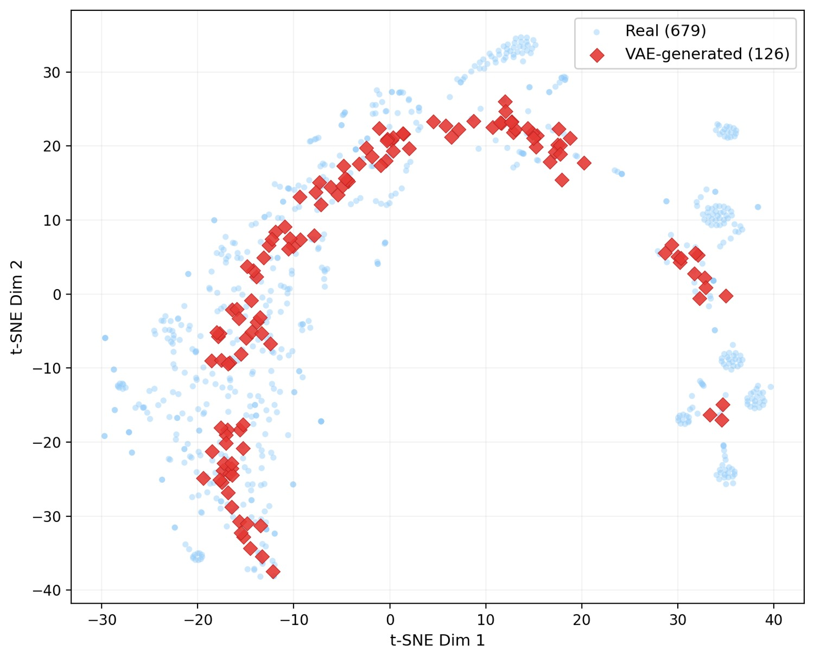

Recommendation · Molecular Representation · Graph Learning
FMASH: Multiscale Symptom-Herb Association Fusion
A TCM formula recommendation framework that fuses symptom-herb graphs, molecular herb representations, missing-feature completion, and ordered prescription generation.

Method
FMASH models prescription generation as a multiscale representation problem. Symptom and herb nodes capture clinical associations, while molecule-level herb embeddings inject chemical structure information that traditional recommendation pipelines often miss.
Symptom-Herb Graph
GCN Local Encoding
UniMol Herb Features
Ordered Formula Generation
\[
H_{\mathrm{graph}}
=\operatorname{GCN}\!\left(A_{\mathrm{symptom\text{-}herb}},X_{\mathrm{node}}\right).
\]
Local heterogeneous graph propagation over symptoms and herbs.
\[
H_{\mathrm{fused}}
=\operatorname{Gate}\!\left(H_{\mathrm{graph}},H_{\mathrm{molecule}}\right).
\]
Molecular representations are fused with graph-side clinical evidence.
Representation
- GCN captures local heterogeneous graph structure.
- BiMamba models long-range node dependency and sequence-level context.
- UniMol-derived molecular embeddings enrich herb representation.
Output
- Top-K recommendation quality for prescription candidates.
- Missing feature completion for sparse symptom/herb attributes.
- Ordered prescription generation rather than unordered set prediction.